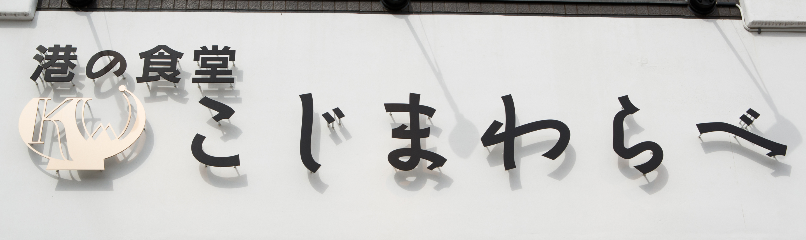
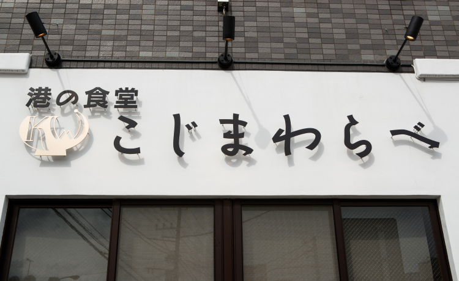

Aboutこじまわらべとは
小田原港随一の食堂として半世紀、惜しまれつつ閉店した「こじま食堂」。同じ早川で切磋琢磨し合ってきた「わらべ菜魚洞」がその味と技を引き継ぎ、わらべ2号店としてリニューアル。「こじま食堂」元料理長が腕を振るう代名詞の「金目鯛の煮付け」は、変わらぬ味が復活したと好評で、本店の人気メニュー、アジフライや海鮮丼なども楽しめます。有名ホテルなどを手がけるデザイナーによる、カフェのようなおしゃれな店内も話題です。
Store Information店舗案内
| 店名 | こじまわらべ |
|---|---|
| 住所 | 〒250-0021 神奈川県小田原市早川1-13-18 |
| アクセス | 電車にて JR早川駅前より徒歩1分 車にて 西西湘バイパス早川出口から1分 小田原厚木道路小田原西出口から4分 |
| TEL | 0465-20-8062 |
| 営業時間 | 11:00 - 15:00 L.O 17:00 - 20:00 L.O |
| 定休日 | 木曜日 |
| 総席数 | 66席 全席禁煙 |
| 駐車場 | 20台(専用) |
| 予約について | 第1：12台 / 第2：8台 計20台 |